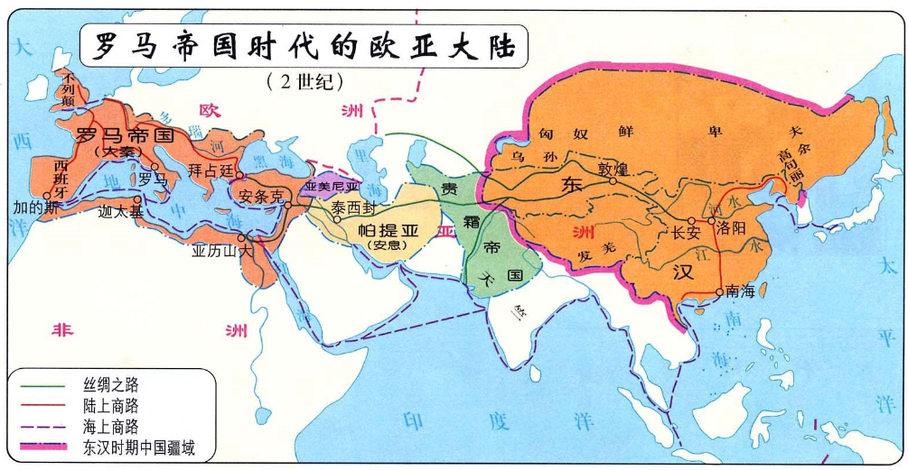

返回主页
罗马帝国（汉朝）和丝绸之路

论势力范围（包含附属国），西汉要大于东汉，汉武帝虚荣心强，征匈奴的时候在大漠里建了许多城堡，显得好像他开拓了多少疆土（其实都是些无人区,土地十分贫瘠），搜索其实不然。后来汉武帝死后，其子孙将这些城堡里的将士们都撤了回来（毕竟太劳民伤财了，大漠的土地又不能耕种，自古以来中国人就对不能耕种的土地不感兴趣），势力范围缩小，这些沙漠又重新被游牧民族占领。如果论主题版图的话，还是西汉大于东汉（也就多那么一块两块地）
一带一路(One Belt and One Road)
亚历山大（春秋战国）的帝国
阿拉伯（唐朝）帝国版图
Kojève 苏秦 张仪 鬼谷子
Adolf Hitler Paintings in Vienna (1908�C1913)
Creating a World Without Poverty
version:1.0; jobnet@188.com © retter2012.com